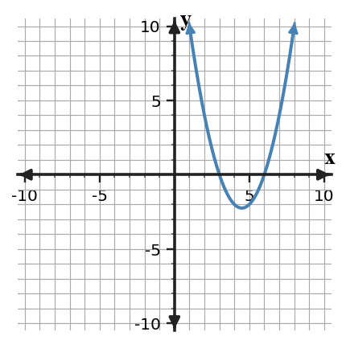
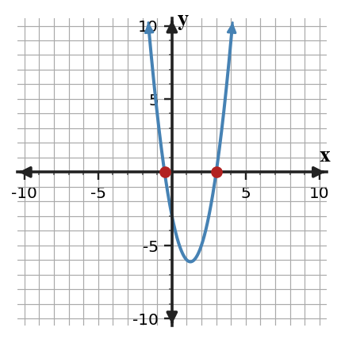
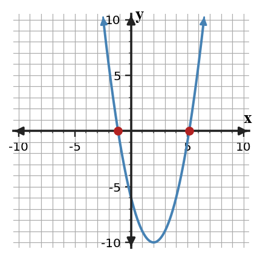
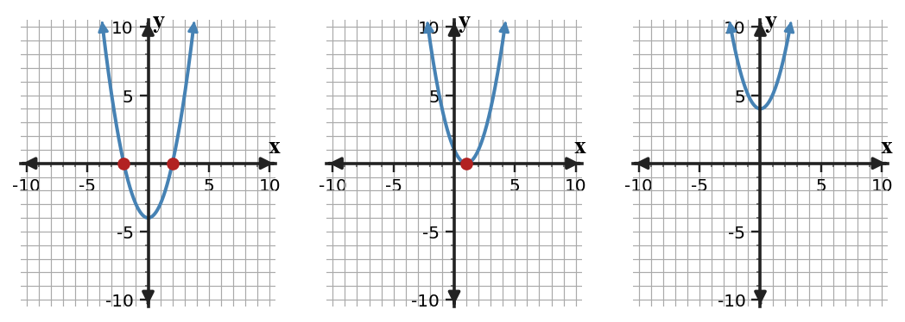

Mathematical idea: The quadratic formula uses $a$, $b$, and $c$ from standard form to find exact solutions and predict the number of real roots.
You will organize coefficients, use the quadratic formula, and interpret the discriminant. You will also compare exact formula results with the intercepts shown on a graph.
Learning Target: Students will solve quadratic equations using the quadratic formula and interpret solutions.
I can statements
This is a long-range preview for future lessons. Do not solve it today. Instead, annotate it individually. Circle anything familiar, underline symbols or directions that seem important, and write notes about what information you think will be needed later.
As you annotate, ask yourself: What parts (words, symbols, graphs) do you KNOW? What parts look FAMILIAR? What parts look like jibberish?
Synthesize Across Representations. Create or revise a quadratic task for Quadratic Formula using the constraints below.
Use the provided graph as one representation. Synthesize the graph, the equation $x^2-9x+18=0$, and the quadratic formula calculation to explain why the two intercepts agree.

Directions
Read the introduction aloud with a partner or in a small group. As you read, annotate the text by highlighting important ideas, circling key vocabulary, and writing short notes about connections, questions, or predictions in the margins.
The quadratic formula begins with the structure of standard form. Before substituting, the equation should be written as $ax^2+bx+c=0$ so $a$, $b$, and $c$ are identified correctly. A coefficient map prevents sign errors and missing terms.
The expression inside the square root has a special job. The discriminant, $b^2-4ac$, predicts whether there are two real solutions, one real solution, or no real solutions. This can be known before finishing the formula.
Some solutions are exact radicals instead of simple integers. A graph may only show approximate intercepts, but those estimates can still confirm whether the formula answer is reasonable. The graph and formula should tell the same story about how many intercepts exist.
This section uses standard form equations, the quadratic formula, discriminant values, exact and approximate solutions, and graphs with two, one, or no $x$-intercepts. Each representation helps catch a different kind of mistake.
In contexts, the formula can give a value that needs interpretation. If the equation models height, time, or distance, the final answer should include units and a decision about whether each solution is meaningful.
Stop and Discuss
The quadratic formula needs coefficients from standard form $ax^2+bx+c=0$.
$$2x^2-5x-3=0 \quad \Rightarrow \quad a=2,\ b=-5,\ c=-3$$| Coefficient | $a$ | $b$ | $c$ |
|---|---|---|---|
| Value | 2 | -5 | -3 |

Context: A coefficient map keeps the numbers tied to their roles before solving.
A solver is preparing to use the quadratic formula. The equation is $3x^2-7x+2=0$.
A second equation is $5x^2+3x-4=0$.
Stop and Discuss
Use the formula when factoring is not efficient or when exact irrational solutions are needed.
$$x=\frac{-b\pm\sqrt{b^2-4ac}}{2a}$$ $$x^2-4x-6=0 \Rightarrow x=\frac{4\pm\sqrt{16+24}}{2}=2\pm\sqrt{10}$$
Context: The exact answers $2-\sqrt{10}$ and $2+\sqrt{10}$ match the two graph intercepts.
A quadratic equation has roots that do not factor nicely. Solve $x^2-2x-8=0$ using the quadratic formula.
Solve $x^2+6x+1=0$ using the quadratic formula.
Stop and Discuss
The discriminant is the part of the formula under the square root.
$$D=b^2-4ac$$| Discriminant | Graph result | Real solutions |
|---|---|---|
| $D\gt0$ | two intercepts | two |
| $D=0$ | touches once | one |
| $D\lt0$ | no intercepts | none |

Context: If a height equation has $D\lt0$, the modeled object never reaches the chosen height in real time.
A student wants to know how many real solutions $4x^2+4x+5=0$ has before solving it.
Decide how many real solutions $2x^2-4x+9=0$ has.
Stop and Discuss
The equation $x^2-6x+5=0$ can be solved by more than one method.
The equation $x^2-10x+21=0$ can be solved by factoring or by formula.
Stop and Discuss
Today you used standard form to organize $a$, $b$, and $c$ before applying the quadratic formula. You also used the discriminant to predict the number and type of real solutions.
The formula $x=\frac{-b\pm\sqrt{b^2-4ac}}{2a}$ depends on accurate substitution. The discriminant $b^2-4ac$ tells what will happen under the square root.
A common error is substituting the wrong sign for $b$ or forgetting that $c$ can be negative. A coefficient map helps prevent that error.
Strong understanding means you can solve exactly, estimate from a graph, and interpret whether the solutions are rational, irrational, repeated, or not real.
Look back at the future task. Do not solve it yet. Highlight one part that makes more sense now than it did at the beginning. Circle one part that still feels unfamiliar. Write one sentence about what representation you would look at first.
Identify $a$, $b$, and $c$ for each equation.
Solve or interpret the quadratic situation for Quadratic Formula. Show the algebra that supports your answer.
Use the quadratic formula to solve $x^2-3x-5=0$ exactly.
What is one idea about quadratic formula you understand better now than at the start of class? Write at least one complete sentence.
What is one thing about quadratic formula you still want to understand or practice? Be specific — name the idea, not just "everything."